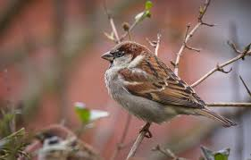

The
House-sparrow
Species
The
House-sparrow
Species
Common Name: House Sparrow
Scientific Name: Passer domesticus
Type: Birds
Diet: Omnivore
Average life span in The Wild: Up to 3 years
Size: 6.3 inches
Weight: 1.1 ounces
Male House Sparrows are brightly colored birds with gray heads, white cheeks, a black bib, and rufous
neck – although in cities you may see some that are dull andgrubby.
Females are a plain buffy-brown overall
with dingy gray-brown underparts. Their backs are noticeably striped with buff, black, and brown.

House Sparrows are noisy sparrows that flutter down from eaves and fencerows to hop and peck at crumbs
or birdseed.
Look for them flying in and out of nest holes hidden behind shop signs or in traffic lights, or
hanging around parking lots waiting for crumbs and picking insects off car grills.
House Sparrows have lived around humans for centuries. Look for them on city streets, taking handouts
in parks and zoos,
or cheeping from a perch on your roof or trees in your yard. House Sparrows are absent
from undisturbed forests and grasslands, but they’re common in countryside around farmsteads.
Read more about sparrow on here
https://en.wikipedia.org/wiki/House_sparrow